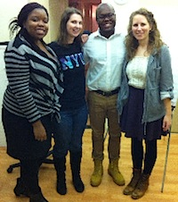

Friends,
I'm excited to announce that the International FOR Fellowship School -- its second annual program and first in the United States, to be hosted at FOR-USA headquarters in Nyack, New York -- has extended its deadline for young adults 18 to 28 years old.
|

2012 IFOR fellows Danielle Nwadinobi (Nigeria), Lucia Haemmerle (Austria), and Gretchen Honnold (USA) welcome FOR-USA Regional Coordinator/Organizer for the Southeast and Mid-Atlantic, Rev. Lucas Johnson, to the Netherlands.
|
This nine-week nonviolence program, from October to December, offers each fellow an opportunity to develop and implement a local level project of his or her own design. Fellows will take leadership roles in the global nonviolence movement, gaining experience through internships, trainings, mentoring, and individual project development.
Last year's school was held in the Netherlands. This year will be conducted here in the U.S. Following the program's close on Dec. 21, fellows will have seven months to implement and evaluate their individual projects. In August 2014, fellows will have the opportunity to attend IFOR's centennial celebration in Konstanz, Germany, to present their projects.
Apply to be an International FOR fellow now -- deadline Friday, Aug. 30!
A bit older and wiser than the program age range? Help spread the word by forwarding this email, share it on Facebook or post it Twitter.
How the IFOR fellowship changed my life
|

Gretchen Honnold
|
As a 2012 fellow, I feel that IFOR's Fellowship School program served as a foundation on which to build both a career and a community that fulfills my passion for peace and justice.
In communicating with IFOR's 72 member organizations in 40 countries, attending weekly trainings lead by IFOR's most experienced leaders, and attending meetings of IFOR's executive bodies all alongside my fellow 2012 Fellowship School comrades, I was given a thorough overview of the many avenues available to me within the nonviolence movement as well as the support to pursue them.
IFOR offers the opportunity to establish yourself within a multifaith and intercultural environment that engages in a vast number of fields related to nonviolence. Whether you are looking to work on issues ranging from social, political, economic, or environmental justice to conflict transformation and reconciliation, IFOR offers to support you in the launching of your own project or action and to connect you with the organization's vast network of expertise. Our team of fellows last year created an interactive presentation to describe our amazing experience.
Furthermore, IFOR encourages continued engagement of its fellows beyond the Fellowship School program. Beginning in March 2013, I was given the opportunity to join IFOR's International Secretariat as a consultant -- a position yielding incredible networking possibilities as I worked more closely with IFOR's executive bodies and experienced national and local FOR membership across Europe and the United States.
Currently, I remain involved in the Fellowship School from a coordinator's role. In addition to providing an entry point for a career in nonviolence, the 2013 edition of our program aims to go a step further in equipping participants to be leaders. We have added a project management unit to the curriculum, supporting our fellows in the development, funding, and implementation of a project of their own design. With our newly added mentorship component, we've paved the way for IFOR fellows to turn their passion for nonviolence, peace, and justice into a career.
I believe the Fellowship School has immense potential for affecting positive change in the realm of global nonviolence, and I am looking forward to witnessing the result of the passion and innovation of this year's fellows.
Please take a moment and apply for the International FOR fellowship in Nyack, NY -- or pass this email on to a young adult you think might be interested. Thank you!
Gretchen Honnold
2012 International Fellowship of Reconciliation Fellow
Charlotte, North Carolina |

{kind=link}